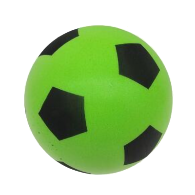

Boden ist ein
Archiv und fortlaufende Sammlung von digitalem Material,
gegliedert in
[fünf Kategorien]. Kuratiert und erstellt von
Carl Riesselmann,
Ergebnis des Kurs Let’s Platform der
HAW Hamburg WiSe 2024/25.
::
Websites(1),
Bilder(2),
Gestaltung(3),
Videos(4)
&
Tools(5)